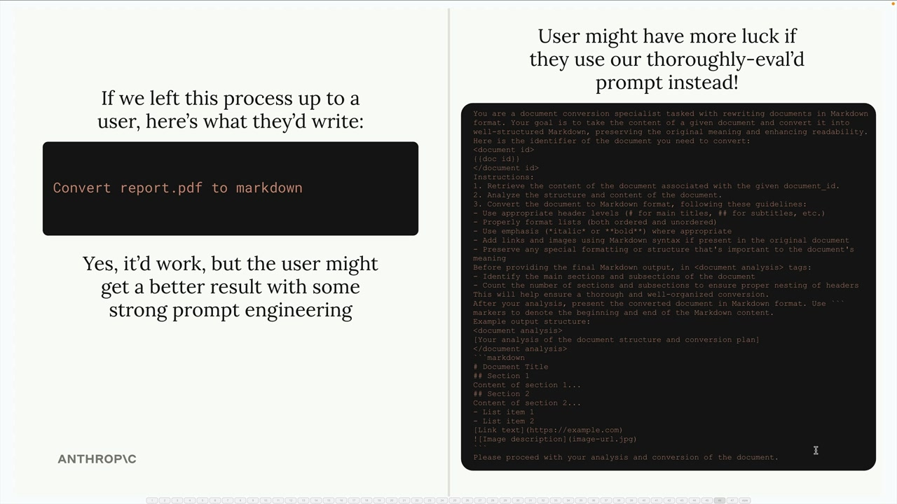
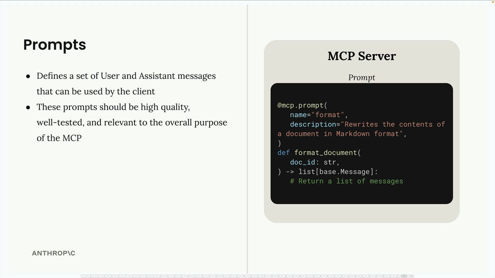
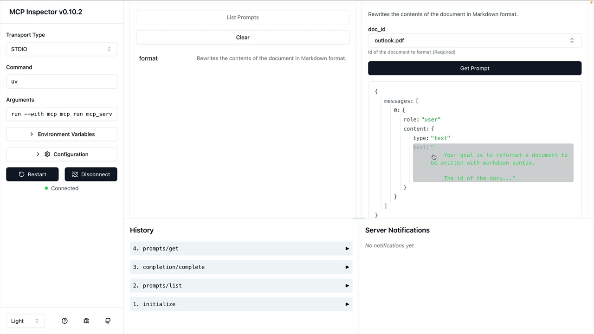

프롬프트 정의하기
MCP 서버의 프롬프트 기능을 사용하면 클라이언트가 직접 프롬프트를 작성하는 대신 활용할 수 있는 사전 제작된 고품질 지침을 정의할 수 있습니다. 사용자가 스스로 떠올리는 것보다 더 나은 결과를 제공하도록 정교하게 설계된 템플릿이라고 생각하면 됩니다.
프롬프트를 사용하는 이유
예를 들어 Claude가 문서를 마크다운 형식으로 변환하길 원한다고 가정해 보겠습니다. 사용자가 "report.pdf를 마크다운으로 변환해줘"라고 입력해도 작동하기는 합니다. 하지만 서식, 구조, 출력 요건에 대한 구체적인 지침이 포함된 충분히 검증된 프롬프트를 사용하면 훨씬 더 좋은 결과를 얻을 수 있습니다.

핵심은, 사용자가 이러한 작업을 혼자서도 수행할 수 있지만 MCP 서버 개발자가 신중하게 개발하고 검증한 프롬프트를 사용할 때 더 일관되고 높은 품질의 결과를 얻을 수 있다는 점입니다.
프롬프트의 작동 방식
프롬프트는 클라이언트가 직접 활용할 수 있는 사용자 및 어시스턴트 메시지 집합을 정의합니다. 클라이언트가 프롬프트를 요청하면 서버는 Claude에게 바로 전달할 수 있는 메시지 목록을 반환합니다.

기본 구조는 다음과 같습니다:
-
@mcp.prompt()데코레이터를 사용하여 프롬프트를 정의합니다 - 각 프롬프트에 이름과 설명을 추가합니다
- 완성된 프롬프트를 구성하는 메시지 목록을 반환합니다
- 이러한 프롬프트는 고품질이어야 하며, 충분히 검증되고 MCP 서버의 목적에 부합해야 합니다
서식 변환 명령어 만들기
문서 서식 변환 프롬프트를 구현하는 방법입니다. 먼저 기본 메시지 타입을 가져와야 합니다:
from mcp.server.fastmcp import base그런 다음 프롬프트 함수를 정의합니다:
@mcp.prompt(
name="format",
description="Rewrites the contents of the document in Markdown format."
)
def format_document(
doc_id: str = Field(description="Id of the document to format")
) -> list[base.Message]:
prompt = f"""
Your goal is to reformat a document to be written with markdown syntax.
The id of the document you need to reformat is:
{doc_id}
Add in headers, bullet points, tables, etc as necessary. Feel free to add in extra formatting.
Use the 'edit_document' tool to edit the document. After the document has been reformatted...
"""
return [
base.UserMessage(prompt)
]프롬프트 테스트하기
MCP Inspector를 사용하여 프롬프트를 테스트할 수 있습니다. Prompts 섹션으로 이동하여 프롬프트를 선택하고 필요한 매개변수를 입력하면 됩니다. Inspector는 Claude에게 전송될 생성된 메시지를 보여줍니다.

이를 통해 실제 애플리케이션에서 사용하기 전에 프롬프트가 변수를 올바르게 삽입하고 예상한 메시지 구조를 생성하는지 확인할 수 있습니다.
모범 사례
MCP 서버용 프롬프트를 작성할 때:
- 서버의 핵심 목적과 관련된 작업에 집중하세요
- 모호한 요청 대신 상세하고 구체적인 지침을 작성하세요
- 다양한 입력값으로 프롬프트를 충분히 테스트하세요
- 각 프롬프트의 기능을 사용자가 이해할 수 있도록 명확한 설명을 포함하세요
- 프롬프트가 서버의 도구 및 리소스와 어떻게 연동될지 고려하세요
프롬프트는 사용자가 혼자서는 쉽게 얻기 어려운 가치를 제공하기 위한 것임을 기억하세요. MCP 서버가 다루는 영역에서 여러분의 전문성을 담아야 합니다.